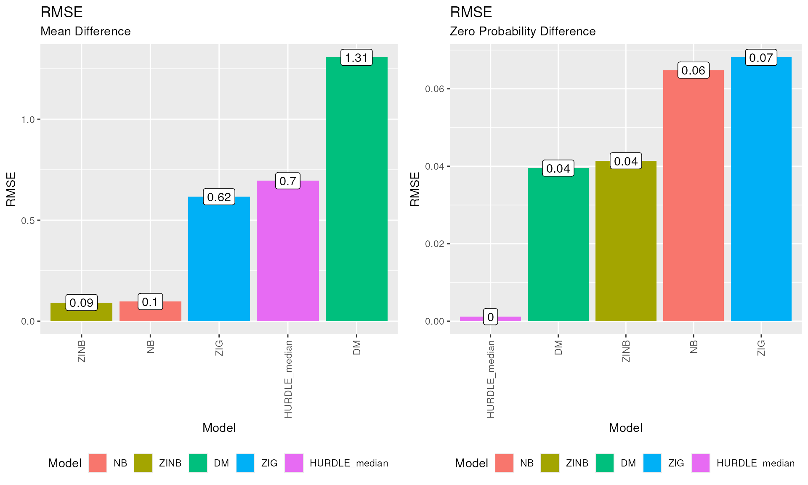
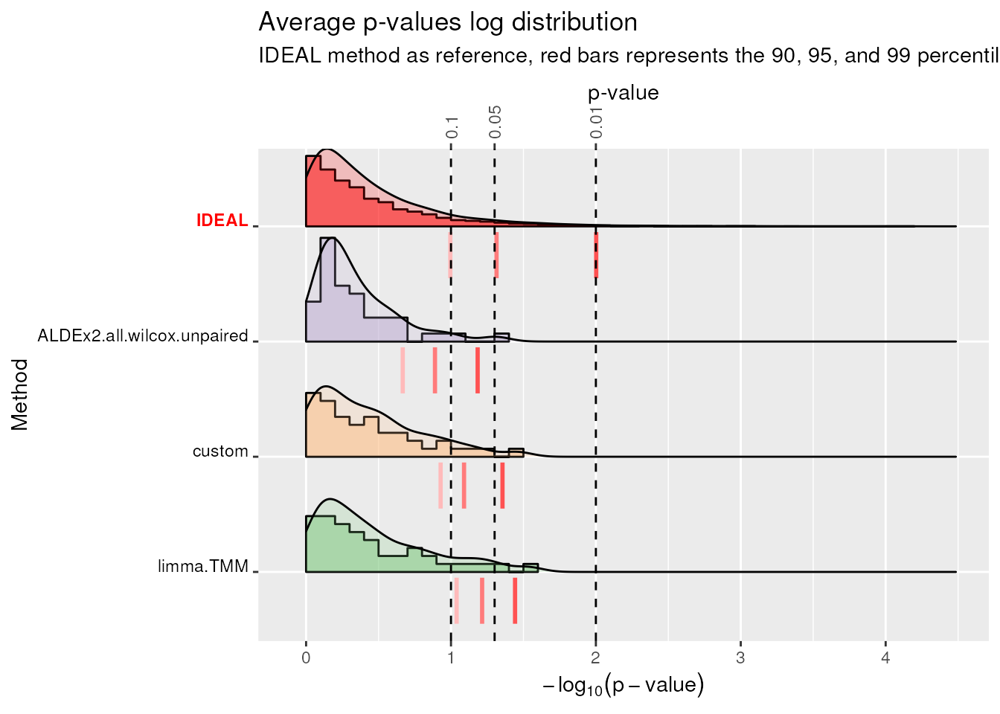
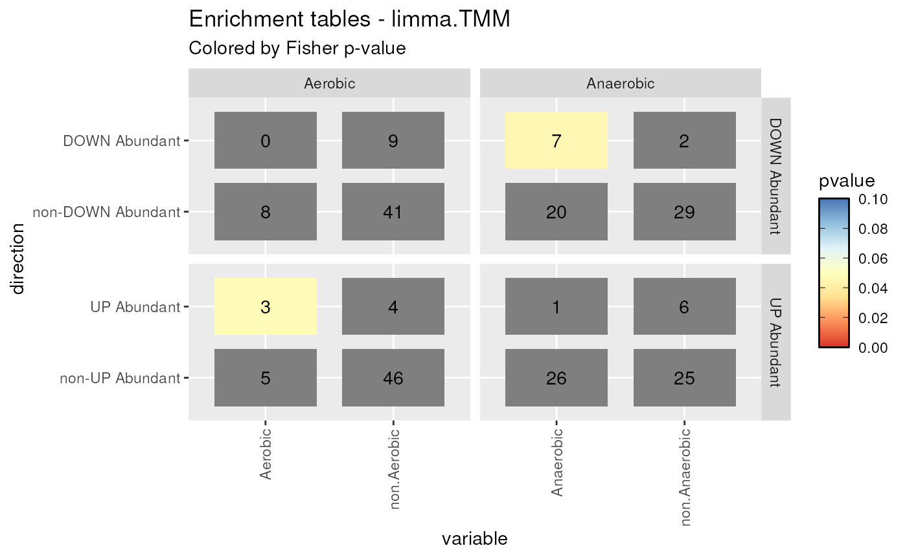
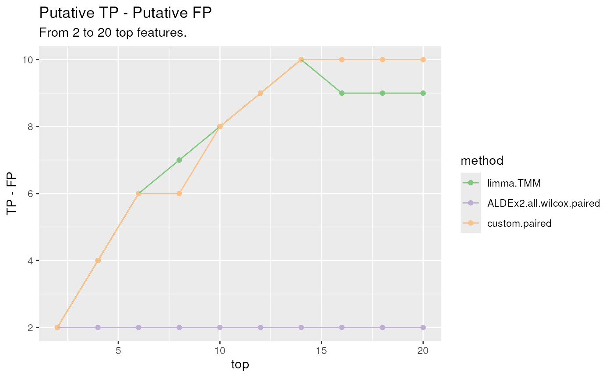

An introduction to benchdamic - EuroBioC2022 workshop
Matteo Calgaro1
Source:vignettes/introduction_to_benchdamic.Rmd
introduction_to_benchdamic.RmdAn introduction to benchdamic - EuroBioC2022 workshop
Author: Matteo Calgaro2
Last modified: 12 September, 2022.
Overview
Description
This workshop provides an introductory example on how to work with the analysis framework firstly proposed in “Assessment of statistical methods from single cell, bulk RNA-seq, and metagenomics applied to microbiome data” by Calgaro et al. (2020).
We will test a couple of methods for differential abundance (DA) analysis on a microbiome dataset and we will see how to test custom methods on the same dataset. Performances of each method are evaluated with respect to i) suitability of distributional assumptions (GOF), ii) ability to control false positives (TIEC), iii) concordance of the findings, and iv) enrichment of DA microbial species in specific conditions.
This workshop is structured as an instructor-led live demo but you can decide whether to spend your time by following the examples as they are or by playing with the large combinations of parameters offered by each implemented DA method.
Moreover, during the workshop you will find indented sections like this one. These are in-depth sections to explore after the workshop if you are interested.
Pre-requisites
- Basic knowledge of R syntax;
- Familiarity with the
phyloseqclass; - Familiarity with DA analysis in microbiome data.
Some suggested background readings for the workshop:
- “Assessment of statistical methods from single cell, bulk RNA-seq, and metagenomics applied to microbiome data” by Calgaro et al. (2020)
- “Microbiome differential abundance methods produce different results across 38 datasets” by Nearing et al. (2022);
- “Normalization and microbial differential abundance strategies depend upon data characteristics” by Weiss et al. (2017);
R / Bioconductor packages used
The Bioconductor package we will use is named
benchdamic, acronym for “BENCHmarking of Differential
Abundance detection methods for MICrobial data”.
Time outline
During the workshop we will have the first 35 minutes of active coding (using the supplied examples). Questions are being addressed during the final 10 minutes.
| Activity | Time |
|---|---|
| Overview | 2 - 3 mins |
| GOF | 5 mins |
| TIEC | 12 mins |
| Concordance | 5 mins |
| Enrichment | 9 mins |
| Conclusions | 1 min |
| Questions and Answer | 10m |
Workshop
Data loading
During the workshop we will use the “ps_plaque_16S” dataset. In contains 16S data from:
30 participants of the Human Microbiome Project (HMP);
samples collected from subgingival plaque and supragingival plaque for each subject (a total of 60 samples);
88 taxa, all features having the same genus-level taxonomic classification have been collapsed together (a total of 88 taxa corresponding to 88 genera).
data("ps_plaque_16S")
ps_plaque_16S
#> phyloseq-class experiment-level object
#> otu_table() OTU Table: [ 88 taxa and 60 samples ]
#> sample_data() Sample Data: [ 60 samples by 7 sample variables ]
#> tax_table() Taxonomy Table: [ 88 taxa by 6 taxonomic ranks ]
#> phy_tree() Phylogenetic Tree: [ 88 tips and 87 internal nodes ]Goodness of Fit
Assumption: Many differential abundance detection methods are based on parametric distributions.
Question: Which are the parametric distributions that can fit both the proportion of zeros and the counts in your data?
GOF structure
Several distributions are available in
benchdamic: 1) the negative binomial (NB) distribution used in packages likeedgeRorDESeq2, 2) the zero-inflated negative binomial (ZINB) distribution as implemented by thezinbwavepackage, 3) the truncated Gaussian Hurdle model as implemented by theMASTpackage 4) the zero-inflated Gaussian (ZIG) mixture model as implemented by themetagenomeSeqpackage, and 5) the Dirichlet-Multinomial (DM) distribution which is the multivariate extension of the beta-binomial (e.g. used by thecorncobpackage).The relationships between the functions that can be used in this section are explained in the next diagram. To help with the reading: green boxes represent the inputs or the outputs, red boxes are the methods and blue boxes are the main parameters of those method.
Goodness of Fit diagram

Fit parametric distributions
We choose one of the two body sites in order to fit the models on a homogeneous group of samples. The same analysis can be performed on both body subsites, or in general, in each group of samples in your data.
# Subset Supragingival Plaque samples
ps_sup <- phyloseq::subset_samples(ps_plaque_16S, HMP_BODY_SUBSITE == "Supragingival Plaque")
# Remove taxa with all zeroes
ps_sup <- phyloseq::filter_taxa(ps_sup, function(x) sum(x > 0) > 0, TRUE)We use the fitModels function to fit all the available
distributions on our dataset:
Comparing estimated and observed values
For each taxon we can compare:
the Mean Difference (MD) i.e. the difference between the estimated mean and the observed mean abundance (log scale);
the Zero Probability Difference (ZPD) i.e. the difference between the probability to observe a zero and the observed proportion of samples which have zero counts.
Using the plotMD function we can study the results. What
we are expecting to see are no systematic trends for the mean difference
values.
plotMD(
data = GOF_plaque_16S,
difference = "MD",
split = TRUE
)
#> Warning: Removed 23 rows containing non-finite values (stat_smooth).
#> Warning: Removed 23 rows containing missing values (geom_point).MD plot. Mean-difference (MD) between the estimated and observed count values for each distribution.
From the figure above we can see that DM distribution overestimates the logarithm of the average counts for low values, while both HURDLE_median and ZIG distributions present an underestimation as the observed values increase. NB and ZINB distributions produce very similar estimated and observed values.
plotMD(
data = GOF_plaque_16S,
difference = "ZPD",
split = TRUE
)ZPD plot. Mean-difference between the estimated probability to observe a zero and the observed proportion of zero values (ZPD).
From the figure above we can see that ZIG and NB models underestimate the probability to observe a zero for sparse features, while the HURDLE_median model presents a perfect fit as the probability to observe a zero is the zero rate itself by construction. DM and ZINB models produce estimated values very similar to the observed ones.
Overall, in this dataset, NB and ZINB distributions seems to work well both for the estimation of the average count value and the zero fraction value. DM model works well for estimating the probability to observe a zero.
Try it yourself
Try the
plotMDfunction with split = FALSE to collapse all the smoothing lines on a single plot.As already mentioned, to summarize the goodness of fit, the Root Mean Squared Error (RMSE) metric is used. The summary statistics for the overall performance can be printed using the
plotRMSEfunction.plot_grid( plotRMSE(GOF_plaque_16S, difference = "MD"), plotRMSE(GOF_plaque_16S, difference = "ZPD"), ncol = 2 )RMSE plot. Root Mean Squared Errors (RMSE) for both the MD and ZPD values.
The lower the RMSE value, the better the goodness of fit of the model.
Differential Abundance detection methods
Before starting, please remember that the data pre-processing, including QC analysis and filtering steps, are not topics of this workshop but in real life situations those steps precede the DA analysis and they are of extreme importance to obtain reliable results.
A list of the available methods is presented below:
| Method (package) | Short description | Test | Normalization / Transformation | Suggested input | Output |
|---|---|---|---|---|---|
| DA_basic (stats) | Simple t and wilcox tests | test = ‘t’, ‘wilcox’ | no normalization | all types | p-values and statistics |
| DA_edgeR (edgeR) | Negative Binomial (NB) generalized linear model. | Empirical Bayes + moderated t, robust estimation of priors (if robust = TRUE), with or without weights (generated by weights_ZINB) | norm = ‘TMM’, ‘TMMwsp’, ‘RLE’, ‘upperquartile’, ‘posupperquartile’, ‘none’ (produced by norm_edgeR) | raw counts with edgeR normalization factors | p-values and statistics |
| DA_limma (limma) | Linear model with weights | Empirical Bayes + moderated t, with or without weights (generated by weights_ZINB) | norm = ‘TMM’, ‘TMMwsp’, ‘RLE’, ‘upperquartile’, ‘posupperquartile’, ‘none’ (produced by norm_edgeR) | raw counts with edgeR normalization factors | p-values and statistics |
| DA_DESeq2 (DESeq2) | Negative Binomial (NB) generalized linear model. | Empirical Bayes + LRT, with or without weights (generated by weights_ZINB) | norm = ‘ratio’, ‘poscounts’, ‘iterate’ (produced by norm_DESeq2) | raw counts with DESeq2 size factors | p-values and statistics |
| DA_NOISeq (NOISeq) | Non-parametric approach for the comparison of tag-wise statistics to the noise distribution to detect differential expression | M and D statistics compared with the noise distribution | norm = ‘rpkm’, ‘uqua’, ‘tmm’, ‘n’ | raw counts or normalized/transformed counts setting norm = “n” | adjusted p-values and statistics |
| DA_dearseq (dearseq) | Variance component score test accounting for data heteroscedasticity through precision weights | test = ‘asymptotic’, ‘permutation’ | automatically transforms raw counts into log(CPM) (if preprocessed = FALSE) | raw counts or log transformed counts setting preprocessed = TRUE | p-values |
| DA_metagenomeSeq (metagenomeSeq) | Zero-Inflated Gaussian (ZIG) mixture model | model = ‘fitZig’, ‘fitFeatureModel’ | norm = ‘CSS’ (produced by norm_CSS) | raw counts with CSS normalization factors | p-values and statistics |
| DA_corncob (corncob) [temporary unavailable] | Beta-Binomial regression model | test = ‘LRT’, ‘Wald’ with (if boot = TRUE) or without bootstrap | automatically transforms raw counts into relative abundances (like using TSS) | raw counts | p-values and statistics |
| DA_ALDEx2 (ALDEx2) | Compositional approach - Monte-Carlo simulations from a Dirichlet distribution | test = ‘t’, ‘wilcox’, ‘kw’, ‘ANOVA’, ‘glm’ | denom = ‘all’, ‘iqlr’, ‘zero’, ‘lvha’, ‘median’, or decided by the user (with test = ‘glm’, denom = ‘all’) | raw counts | p-values and statistics |
| DA_ANCOM (ANCOMBC) | Compositional approach - Analysis of microbiome compositions with or without “sampling fraction” bias correction | ANCOM-II algorithm + bias correction (if BC = TRUE) or ANCOM | automatic in-method Additive Log Ratio (ALR) like transformation + normalization based on zero types imputation (if BC = TRUE) | raw counts | p-values and statistics (if BC = TRUE), only statistics otherwise |
| DA_Seurat (Seurat) | Data transformed and scaled before a test | test = ‘wilcox’, ‘bimod’, ‘roc’, ‘t’, ‘negbinom’, ‘poisson’, ‘LR’, ‘MAST’, ‘DESeq2’ | norm = ‘LogNormalize’, ‘CLR’, ‘RC’, ‘none’ (with test = ‘negbinom’, ‘poisson’, or ‘DESeq2’, data are not transformed). scale.factor parameter to scale data | raw counts | p-values and statistics |
| DA_MAST (MAST) | Truncated Gaussian hurdle model | Standard Empirical Bayes + LRT | log(CPM) transformation + in-method normalization | raw counts | p-values and statistics |
Type I Error Control
Assumption: Many methods do not control the number of false discoveries.
Question: Which are the differential abundance methods which can control the number of false positives in your data?
TIEC structure
Briefly, we randomly assign each sample to one of two experimental groups (using the
createMocksfunction) and perform DA analysis (with therunMocksfunction) between these groups, repeating the process 10 times (at least 1000 times are suggested). In this setting, the p-values of a perfect test should be uniformly distributed between 0 and 1 and the false positive rate (FPR or observed \(\alpha\)), which is the observed proportion of significant tests, should match the nominal value (e.g. \(\alpha=0.05\)). Finally, we will use thecreateTIECfunction which produces the data.frame for plotting the results.The relationships between the functions used in this section are explained by the next diagram:
Type I Error Control diagram.

Using
createMocksfunction we randomly assign a label (‘grp1’ or ‘grp2’) to the samples which should be homogeneous;we run DA methods to find differences between the two groups using
runMocks;we count the number of DA feature for each method, these are False Positives by construction;
we repeat 1-3 many times (N = 10, but at least 1000 is suggested) and we average the results using the
createTIECfunction.
Create mock comparisons
set.seed(123)
my_mocks <- createMocks(
nsamples = phyloseq::nsamples(ps_sup),
N = 10
) # At least N = 1000 is suggestedSet up normalizations and DA methods
Firstly, by using the setNormalizations and
runNormalizations methods, we add to the
phyloseq object (or TreeSummarizedExperiment
object) some scaling factors such as TMM from
edgeR.
# Set the instructions
my_normalizations <- setNormalizations(
fun = c("norm_edgeR"),
method = c("TMM"))
# Add the normalization/scaling factors to the object
ps_sup <- runNormalizations(
normalization_list = my_normalizations,
object = ps_sup,
verbose = TRUE)
#> + Running now:norm_edgeR
#> Parameters:method=TMM
#> Found more than one class "phylo" in cache; using the first, from namespace 'phyloseq'
#> Also defined by 'tidytree'
#> Found more than one class "phylo" in cache; using the first, from namespace 'phyloseq'
#> Also defined by 'tidytree'
#> Found more than one class "phylo" in cache; using the first, from namespace 'phyloseq'
#> Also defined by 'tidytree'
#> Found more than one class "phylo" in cache; using the first, from namespace 'phyloseq'
#> Also defined by 'tidytree'
#> NF.TMM column has been added.Some messages “Found more than one”phylo” class in cache…” could be
shown after running the previous functions. They are caused by
duplicated class names between phyloseq and
tidytree packages and can be ignored.
Try it yourself
Normalization step can also be done manually, for example by using the
norm_edgeR,norm_DESeq2, andnorm_CSSmethods.ps_sup <- norm_edgeR( object = ps_sup, method = "TMM" ) ps_sup <- norm_DESeq2( object = ps_sup, method = "poscounts" ) ps_sup <- norm_CSS( object = ps_sup, method = "CSS" ) # See the normalization/scaling factors inside the object head(phyloseq::sample_data(ps_sup)[, c("NF.TMM", "NF.poscounts", "NF.CSS")])
After the normalization/scaling factors have been added to the
phyloseq or TreeSummarizedExperiment object,
you could decide to filter rare taxa which do not carry much
information. In this example a simple filter is applied to keep only
features with a count in at least 3 samples.
ps_sup_filtered <- phyloseq::filter_taxa(
physeq = ps_sup,
flist = function(x) sum(x > 0) >= 3,
prune = TRUE)
ps_sup_filtered
#> phyloseq-class experiment-level object
#> otu_table() OTU Table: [ 44 taxa and 30 samples ]
#> sample_data() Sample Data: [ 30 samples by 8 sample variables ]
#> tax_table() Taxonomy Table: [ 44 taxa by 6 taxonomic ranks ]
#> phy_tree() Phylogenetic Tree: [ 44 tips and 43 internal nodes ]We set the instructions of a bunch of DA methods. In this workshop we will use:
limmawith TMM scaling factors;ALDEx2with denom = “all” data transformation performing the wilcox test;
Other methods and many combination of parameters are still possible but not included in this workshop.
my_limma <- set_limma(
pseudo_count = FALSE,
design = ~ group,
coef = "groupgrp2",
norm = "TMM",
weights_logical = FALSE,
expand = TRUE)
my_ALDEx2 <- set_ALDEx2(
pseudo_count = FALSE,
design = "group",
mc.samples = 128,
test = "wilcox",
paired.test = FALSE,
denom = "all",
contrast = c("group", "grp2", "grp1"),
expand = TRUE)
my_methods <- c(my_limma, my_ALDEx2)Add a custom method
Let’s create a very simple custom DA method.
I want to start from the log-transformed counts (adding 1 to all counts to avoid log(0)) and perform a t-test.
If you want to try something else, feel free to do it, just remember to:
include a verbose = TRUE (or FALSE) parameter to let the user know what the method is doing;
return a pValMat matrix which contains the raw p-values and adjusted p-values in rawP and adjP columns respectively;
return a statInfo matrix which contains the summary statistics for each feature, such as the logFC, standard errors, test statistics and so on;
return a name which contains the complete name of the used method.
DA_custom <- function(
object,
contrast = NULL,
paired = FALSE,
verbose = TRUE)
{
name <- "custom"
# Read the counts
counts_and_metadata <- get_counts_metadata(object)
counts <- counts_and_metadata[[1]]
metadata <- counts_and_metadata[[2]]
# Log transform data
if(verbose){
message("Log transform the counts")
}
logcounts <- log1p(counts)
# Check if contrast vector is present
# We need it to understand what to test
if(is.null(contrast)){
stop("Please supply a contrast vector")
}
# Look for samples of the first and second group
group1 <- which(metadata[, contrast[1]] == contrast[2])
group2 <- which(metadata[, contrast[1]] == contrast[3])
if(paired){
# Check if the number of samples in the groups is equal
if(length(group1) != length(group2)){
stop(method, "\n", "paired = TRUE but ",
contrast[2], " and ", contrast[3], " have ",
length(group1), " and ", length(group2),
" samples respectively.")
}
if(verbose){
message("Performing the analysis on paired data")
}
# Update the name
name <- paste(name, ".", "paired", sep = "")
}
if(verbose){
message("Performing t.tests")
}
# Perform the tests
statInfo_list <- apply(
X = logcounts,
MARGIN = 1,
FUN = function(feature){
if(!paired){
# Compute the average values for each group
avg_group1 <- mean(feature[group1])
avg_group2 <- mean(feature[group2])
# Compute the logFC
logFC <- avg_group1 - avg_group2
} else {
# Compute the average difference for each group
logFC <- mean(feature[group1] - feature[group2])
}
# Perform the t-test
results <- stats::t.test(
x = feature[group1],
y = feature[group2],
paired = paired)
# Prepare the output
out <- data.frame(
logFC,
"statistic" = results[["statistic"]],
"pvalue" = results[["p.value"]],
"lowCI" = results[["conf.int"]][1],
"uppCI" = results[["conf.int"]][2])
return(out)
}
)
# Transform the list into a data.frame
statInfo <- plyr::ldply(statInfo_list)
# Rename the columns
colnames(statInfo)[1] <- "taxon"
# Create pValMat
padj <- stats::p.adjust(p = statInfo$pvalue, method = "BH")
pValMat <- data.frame("rawP" = statInfo[, "pvalue"], "adjP" = padj)
# Add rownames
rownames(statInfo) <- rownames(pValMat) <- statInfo[, 1]
# Return statInfo, pValMat and a name
return(list(
"pValMat" = pValMat,
"statInfo" = statInfo,
"name" = name))
} # END - function: DA_customWe add it to the framework by creating a list containing one or more instances of the custom method with the desired combination of parameters:
my_custom_method <- list(
customMethod.1 = list(
method = "DA_custom",
contrast = c("group", "grp2", "grp1"),
paired = FALSE)
)The method field, containing the name of the method to call, is mandatory, while the verbose parameter is not needed.
We put all the instructions together by concatenating them in a
single object called my_methods and then we run them using the
runMocks function:
# Add the custom method instances to the others
my_methods <- c(my_methods, my_custom_method)
# Random grouping each time
sup_mockDA <- runMocks(
mocks = my_mocks,
method_list = my_methods,
object = ps_sup_filtered,
verbose = FALSE)If some warnings are reported set verbose = TRUE to obtain the method name and the mock comparison where the warnings occured.
The structure of the output in this example is the following:
-
Comparison1 to Comparison10 on the first level, which contains:
-
Method1 to Method3 output lists on the second level:
pValMat which contains the matrix of raw p-values and adjusted p-values in rawP and adjP columns respectively;
statInfo which contains the matrix of summary statistics for each feature, such as the logFC, standard errors, test statistics and so on;
name which contains the complete name of the used method.
-
Counting the False Positives
We run the createTIEC function for counting the False
Positives:
TIEC_summary <- createTIEC(sup_mockDA)We can plot the results by using the plotFPR
function:
cols <- createColors(
variable = levels(TIEC_summary$df_FPR$Method))
plotFPR(df_FPR = TIEC_summary$df_FPR, cols = cols)
#> Using Comparison, Method as id variablesFPR plot. Boxplots of the proportion of raw p-values lower than the commonly used thresholds for the nominal \(\alpha\) (i.e. the False Positive Rate) for each DA method.
The false positive rate (FPR or observed \(\alpha\)), which is the observed proportion
of significant tests, should match the nominal value (red dotted lines)
because all the findings are false positive by construction. In this
example ALDEx2.all.wilcox.unpaired has a conservative
behavior as it is below the thresholds. Instead, limma.TMM
seems to be conservative for the lowest threshold and in line with the
expectations for 0.05 and 0.1 thresholds.
Other graphical representations
createTIECproduces a list of 4 data frames and a graphical representation is available for each of them:
df_pval is a 5 columns and number_of_features x methods x comparisons rows data frame. The five columns are called Comparison, Method, variable (which contains the feature names), pval and padj;
df_FPR is a 5 columns and methods x comparisons rows data frame. For each set of method and comparison, the proportion of false positives, considering 3 threshold (0.01, 0.05, 0.1) are reported;
df_QQ contains the average p-value for each theoretical quantile, i.e. the coordinates to draw the QQ-plot for comparing the mean observed p-values distribution across comparisons, with the theoretical uniform distribution. Indeed, the observed p-values should follow a uniform distribution under the null hypothesis of no differential abundant features presence;
df_KS is a 5 columns and methods x comparisons rows data frame. For each set of method and comparison, the Kolmogorov-Smirnov test statistics and pvalues are reported in KS and KS_pval columns respectively.
QQ-Plot
The p-values distribution under the null hypothesis should be uniform. This is qualitatively summarized in the QQ-plot.
Methods over the bisector show a conservative behavior, while methods below the bisector a liberal one:
QQ plot. Quantile-quantile plots from 0 to 1 for each DA method are displayed separately. Average curves are reported
Kolmogorov-Smirnov test
Departure from uniformity is quantitatively evaluated through the Kolmogorov-Smirnov test:
plotKS(df_KS = TIEC_summary$df_KS, cols = cols)KS plot. Kolmogorov-Smirnov (KS) statistic boxplots for each DA methods where the raw p-values distribution is compared with a uniform distribution.
High KS values indicates departure from the uniformity while low values indicates closeness.
ADLEx2.all.wilcox.unpaired, which was very conservative has distribution of p-values far from uniformity.custommethod instead has the lowest KS value.Log distribution of p-values
Looking at the p-values’ log-scale can also be informative. This is because behavior in the tail may be poor even when the overall p-values distribution is uniform, with a few unusually small p-values in an otherwise uniform distribution.
plotLogP(df_QQ = TIEC_summary$df_QQ, cols = cols)-log10(average p-value) plot (‘average’ refers to the average p-value computed for each quantile across mocks comparisons). Negative logarithm distribution of average p-values. Red-shaded vertical bars represent the 90, 95, and 99 percentiles for the negative log distribution of average p-values for each method. They should align with the dotted lines which represent the percentiles of the IDEAL distribution.
The \(-\log_{10}(p-value)\) IDEAL distribution is reported in red color as the first method. To highlight tail’s behaviors, 3 percentiles (0.9, 0.95, 0.99) are reported using red-shaded vertical segments for each method. If the method’s distribution of negative log-transformed p-values or average p-values is still uniform in the 3 selected quantiles of the tail, the 3 red vertical segments will align to the respective dotted line. Usually, when a method has its red segments to the left of the IDEAL’s (e.g.
ALDEx2.all.wilcox.unpaired) its behavior is conservative. Indeed, for those methods, little p-values are fewer than expected. On the contrary, methods with red segments to the right of the IDEAL’s have a liberal behavior. Overall,limma.TMMhas the best performances among the three methods.
Concordance
Assumption: Applying different methods to the same data may produce different results.
Questions: How much do the methods agree with each other? How much does a method agree with itself?
Concordance structure
Several functions are involved in the concordance analysis. First of all, the normalization methods need to be set up using the
setNormalizationsfunction. The differential abundance framework is set up by usingset_*functions. Once all these instructions are set up, we can call therunSplitsfunction. Finally, thecreateConcordanceandplotConcordancefunctions are used to compute and plot the results.The relationships between the functions used in this section are explained by the next diagram:
Concordance analysis diagram.

If we want to measure the ability of each method to produce replicable results:
we consider a dataset with two or more groups and split it by half to obtain the Subset1 and Subset2 datasets using the
createSplitsfunction;we run DA methods on both subsets using the
runSplitsfunction;we compute the Concordance At the Top metric (CAT) between the lists of p-values to obtain the Between Method Concordances (BMC) and the Within Method Concordances (WMC);
we repeat the 1-3 many times (N = 10, but at least 100 is suggested) and we average the results using the
createConcordancefunction.
This time we consider the samples from both the supragingival and subgingival plaques.
Split datasets
We split the dataset considering the paired design:
# Set the HMP_BODY_SUBSITE and RSID variable as factors
sample_data(ps_plaque_16S)$HMP_BODY_SUBSITE <-
factor(sample_data(ps_plaque_16S)$HMP_BODY_SUBSITE)
sample_data(ps_plaque_16S)$RSID <-
factor(sample_data(ps_plaque_16S)$RSID)
# Set a seed for reproducibility
set.seed(123)
my_splits <- createSplits(
object = ps_plaque_16S,
varName = "HMP_BODY_SUBSITE",
paired = "RSID",
balanced = TRUE,
N = 10
) # At least 100 is suggestedSet up normalizations and DA methods
For some of the methods implemented in this package it is possible to
perform differential abundance testings for the repeated measurements
experimental designs (e.g. by adding the subject ID in the
model formula of limma).
my_limma <- set_limma(
design = ~ 1 + RSID + HMP_BODY_SUBSITE,
coef = "HMP_BODY_SUBSITESupragingival Plaque",
norm = "TMM"
)
my_ALDEx2 <- set_ALDEx2(
pseudo_count = FALSE,
design = "HMP_BODY_SUBSITE",
mc.samples = 128,
test = "wilcox",
paired.test = TRUE,
denom = "all",
contrast = c(
"HMP_BODY_SUBSITE",
"Supragingival Plaque",
"Subgingival Plaque"))
my_custom_method <- list(
customMethod.1 = list(
method = "DA_custom",
contrast = c(
"HMP_BODY_SUBSITE",
"Supragingival Plaque",
"Subgingival Plaque"),
paired = TRUE)
)
my_methods <- c(
my_limma,
my_ALDEx2,
my_custom_method)Similarly, to set the normalization methods, the
setNormalizations function can be used. In this case it has
already been set up for the TIEC analysis:
str(my_normalizations)
#> List of 1
#> $ norm_edgeR:List of 2
#> ..$ fun : chr "norm_edgeR"
#> ..$ method: chr "TMM"The runSplits function generates the subsets and
performs DA analysis on the features with at least 1 (min_counts > 0)
count in more than 2 samples (min_samples > 2):
Plaque_16S_splitsDA <- runSplits(
split_list = my_splits,
method_list = my_methods,
normalization_list = my_normalizations,
object = ps_plaque_16S,
min_counts = 0, min_samples = 2,
verbose = FALSE)The structure of the output in this example is the following:
-
Subset1 and Subset2 on the first level, which contains:
-
Comparison1 to Comparison10 output lists on the second level:
-
results of the 3 methods on the third level:
limmawith TMM scaling factors,ALDEx2with paired wilcox test and denom equals to all, andcustomfor paired data. They are organized as already described:pValMat which contains the matrix of raw p-values and adjusted p-values in rawP and adjP columns respectively;
statInfo which contains the matrix of summary statistics for each feature, such as the logFC, standard errors, test statistics and so on;
name which contains the complete name of the used method.
-
-
Comparing the concordances
For each pair of methods the concordance is computed by the
createConcordance function:
concordance <- createConcordance(
object = Plaque_16S_splitsDA
)More details
The
createConcordancefunction produces a long format data frame object with several columns:
- comparison which indicates the comparison number;
- n_features which indicates the total number of taxa in the comparison dataset;
- name of method1;
- name of method2;
- rank;
- concordance which is defined as the cardinality of the intersection of the top rank elements of each list, divided by rank, i.e., \(\frac{L_{1:rank} \bigcap M_{1:rank}}{rank}\), where L and M represent the lists of p-values of method1 and method2 respectively. A noise value (\(<10^{-10}\)) is added to each p-value (or statistic) in order to avoid duplicated values which cannot be ordered.
Concordances based on other statistics
The
createConcordancemethod is very flexible. In the example below the concordances are built using the log fold changes or other statistics instead of the p-values. To do so, it is necessary to know the column names generated by each differential abundance method in the statInfo matrix.Firstly, inspect the method order:
names(Plaque_16S_splitsDA$Subset1$Comparison1)Then, look at the column names:
cat("limma.TMM", "\n") names(Plaque_16S_splitsDA$Subset1$Comparison1$limma.TMM$statInfo) cat("ALDEx2.all.wilcox.paired", "\n") names(Plaque_16S_splitsDA$Subset1$Comparison1$ALDEx2.all.wilcox.paired$ statInfo) cat("custom.paired", "\n") names(Plaque_16S_splitsDA$Subset1$Comparison1$custom.paired$statInfo)All methods, except for ALDEx2, contain the log fold change values in the logFC column of statInfo matrix. Knowing this, the concordance data frame can be built using:
concordance_alternative <- createConcordance( object = Plaque_16S_splitsDA, slot = "statInfo", colName = c("logFC", "effect", "logFC"), type = c("logfc", "logfc", "logfc") )
Using the plotConcordance function the CAT values from
rank 1 to 30 are drawn. The area between the curve and the bisector is
colored to highlight concordant methods (blue) and non-concordant ones
(red).
pC <- plotConcordance(
concordance = concordance,
threshold = 30)
cowplot::plot_grid(
plotlist = pC,
ncol = 2,
align = "h",
axis = "tb",
rel_widths = c(1, 3))BMC and WMC plot. Between-method concordance (BMC) and within-method concordance (WMC) (main diagonal) averaged values from rank 1 to 30.
limma.TMM and custom methods show the
highest BMC values while ALDEx2.all.wilcox.paired shows the
highest WMC value.
More about WMC and BMC metrics
It is common that WMC values (in red rectangles) are lower than BMC ones. Indeed, BMC is computed between different methods on the same Subset, while WMC is computed for a single method between the results obtained in Subset1 and Subset2 (some taxa are dataset-specific).
Mock comparisons and random splits allow to evaluate type I error and concordance. However, these analyses do not assess the correctness of the discoveries. Even the method with the highest WMC could nonetheless consistently identify false positive DA taxa.
Enrichment analysis
Assumption: Previous analyses did not assess the correctness of the discoveries.
Question: If some prior knowledge about your experiment is available, would the finding be coherent with that knowledge?
Enrichment analysis structure
After performing DA analysis on a dataset where some prior knowledge is given,
createEnrichmentandcreatePositivesfunctions can be used to analyse the enrichment of DA features in specific levels of the prior knowledge variable.The relationships between the functions used in this section are explained by the next diagram:
Enrichment analysis diagram.

We run DA methods to test a difference between two experimental groups using the
runDAfunction;we use the prior knowledge (if present) to check the correctness of the findigs using the
createEnrichmentfunction.
A priori knowledge
Here, we leveraged the peculiar environment of the gingival site:
the supragingival biofilm is directly exposed to the open atmosphere of the oral cavity, favoring the growth of aerobic species;
In the subgingival biofilm, the atmospheric conditions gradually become strict anaerobic, favoring the growth of anaerobic species.
From the comparison of the two sites, we thus expect to find an abundance of aerobic microbes in the supragingival plaque and of anaerobic bacteria in the subgingival plaque.
Microbial metabolism data comes from a research article titled
“Tobacco exposure associated with oral microbiota oxygen utilization in
the New York City Health and Nutrition Examination Study” by Beghini et al.
(2019). They can be loaded using
data("microbial_metabolism"):
data("microbial_metabolism")
head(microbial_metabolism)
#> Genus Type
#> 1 Acholeplasma F Anaerobic
#> 2 Actinomycetaceae F Anaerobic
#> 3 Aeriscardovia Aerobic
#> 4 Aerococcus F Anaerobic
#> 5 Aggregatibacter F Anaerobic
#> 6 Alloscardovia AnaerobicWe have to match each taxon of the phyloseq object to its type of metabolism:
# Extract genera from the phyloseq tax_table slot
genera <- phyloseq::tax_table(ps_plaque_16S)[, "GENUS"]
# Genera as rownames of microbial_metabolism data.frame
rownames(microbial_metabolism) <- microbial_metabolism$Genus
# Match OTUs to their metabolism
priorInfo <- data.frame(genera,
"Type" = microbial_metabolism[genera, "Type"])
# Populate the Unknowns
unknown_metabolism <- is.na(priorInfo$Type)
priorInfo[unknown_metabolism, "Type"] <- "Unknown"
# Relabel 'F Anaerobic' to 'F_Anaerobic' to remove space
priorInfo$Type <- factor(
priorInfo$Type,
levels = c("Aerobic","Anaerobic","F Anaerobic","Unknown"),
labels = c("Aerobic","Anaerobic","F_Anaerobic","Unknown"))
# Add a more informative names column
priorInfo[, "newNames"] <- paste0(rownames(priorInfo), "|",
priorInfo[, "GENUS"])Set up normalization and DA methods
Both the normalization/scaling factors and the DA methods’ instructions are available since the dataset is the same used in the previous section.
my_normalizations
#> $norm_edgeR
#> $norm_edgeR$fun
#> [1] "norm_edgeR"
#>
#> $norm_edgeR$method
#> [1] "TMM"
my_methods
#> $DA_limma.1
#> $DA_limma.1$method
#> [1] "DA_limma"
#>
#> $DA_limma.1$assay_name
#> [1] "counts"
#>
#> $DA_limma.1$pseudo_count
#> [1] FALSE
#>
#> $DA_limma.1$design
#> [1] "~1 + RSID + HMP_BODY_SUBSITE"
#>
#> $DA_limma.1$coef
#> [1] "HMP_BODY_SUBSITESupragingival Plaque"
#>
#> $DA_limma.1$norm
#> [1] "TMM"
#>
#> $DA_limma.1$weights
#> [1] FALSE
#>
#>
#> $DA_ALDEx2.1
#> $DA_ALDEx2.1$method
#> [1] "DA_ALDEx2"
#>
#> $DA_ALDEx2.1$assay_name
#> [1] "counts"
#>
#> $DA_ALDEx2.1$pseudo_count
#> [1] FALSE
#>
#> $DA_ALDEx2.1$design
#> [1] "HMP_BODY_SUBSITE"
#>
#> $DA_ALDEx2.1$mc.samples
#> [1] 128
#>
#> $DA_ALDEx2.1$test
#> [1] "wilcox"
#>
#> $DA_ALDEx2.1$paired.test
#> [1] TRUE
#>
#> $DA_ALDEx2.1$denom
#> [1] "all"
#>
#> $DA_ALDEx2.1$contrast
#> [1] "HMP_BODY_SUBSITE" "Supragingival Plaque" "Subgingival Plaque"
#>
#>
#> $customMethod.1
#> $customMethod.1$method
#> [1] "DA_custom"
#>
#> $customMethod.1$contrast
#> [1] "HMP_BODY_SUBSITE" "Supragingival Plaque" "Subgingival Plaque"
#>
#> $customMethod.1$paired
#> [1] TRUETo add the normalization/scaling factors to the object:
ps_plaque_16S <- runNormalizations(
normalization_list = my_normalizations,
object = ps_plaque_16S)A simple filter to remove rare taxa:
ps_plaque_16S <- phyloseq::filter_taxa(physeq = ps_plaque_16S,
flist = function(x) sum(x > 0) >= 3, prune = TRUE)
ps_plaque_16S
#> phyloseq-class experiment-level object
#> otu_table() OTU Table: [ 58 taxa and 60 samples ]
#> sample_data() Sample Data: [ 60 samples by 8 sample variables ]
#> tax_table() Taxonomy Table: [ 58 taxa by 6 taxonomic ranks ]
#> phy_tree() Phylogenetic Tree: [ 58 tips and 57 internal nodes ]Perform DA analysis:
Plaque_16S_DA <- runDA(
method_list = my_methods,
object = ps_plaque_16S,
verbose = FALSE)Testing the enrichment
We use the createEnrichment with the direction
parameter:
enrichment <- createEnrichment(
object = Plaque_16S_DA, # DA results
priorKnowledge = priorInfo, # Pior knowledge
enrichmentCol = "Type", # name of the interesting column
namesCol = "newNames", # name of the new taxa names (opt)
slot = "pValMat", # Which output slot for DA detection
colName = "adjP", # Which column of the output slot
type = "pvalue", # What kind of measure it is
# Optional, gives the sign of DA
direction = c( # name of the colums in statInfo matrix
"logFC", # limma
"effect", # ALDEx2
"logFC"), # custom
threshold_pvalue = 0.1, # adjP threshold for DA detection
threshold_logfc = 0, # logFC threshold for DA detection
top = NULL, # select only the top features (opt)
alternative = "greater", # alternative test enrichment
verbose = TRUE
)
#>
#> Method: limma.TMM
#> * 'adjP' column, as pvalue type, of pValMat matrix.
#> * 'logFC' column, as direction, of statInfo matrix.
#> * DA: , adjP<=0.1, |logFC|>=0
#>
#> Method: ALDEx2.all.wilcox.paired
#> * 'adjP' column, as pvalue type, of pValMat matrix.
#> * 'effect' column, as direction, of statInfo matrix.
#> * DA: , adjP<=0.1, |effect|>=0
#>
#> Method: custom.paired
#> * 'adjP' column, as pvalue type, of pValMat matrix.
#> * 'logFC' column, as direction, of statInfo matrix.
#> * DA: , adjP<=0.1, |logFC|>=0More about the enrichment
The produced enrichment object consists in a list of elements as long as the number of tested methods:
the data slot contains information for each feature. P-values, adjusted p-values (or other statistics) in stats column, log fold changes (or other statistics, if specified) in direction column, differential abundance information in the DA column (according to the thresholds), the variable of interest for the enrichment analysis, and the name of the feature in the feature column;
in the tables slot a maximum of 2 x (levels of enrichment variable) contingency tables (2x2) are present;
in the tests slot, the list of Fisher exact tests produced by the
fisher.testfunction are saved for each contingency table;in the summaries slot, the first elements of the contingency tables and the respective p-values are collected for graphical purposes.
Considering one of the methods,
limma.TMM, we obtain 8 contingency tables. Both UP Abundant and DOWN Abundant taxa are found and the enrichment variable has Aerobic, Anaerobic, F_Anaerobic, and Unknown levels. For each level, we can build 2 contingency tables: one for DOWN Abundant vs non-DOWN Abundant features and one for UP Abundant vs non-UP Abundant features. The enrichment is tested using Fisher exact test. TheplotContingencyfunction summarize all these informations:plotContingency(enrichment = enrichment, levels_to_plot = c("Aerobic", "Anaerobic"), method = "limma.TMM") #> Using .id, direction, level as id variablesContingency tables plot. Contingency tables for Aerobic and Anaerobic taxa found as differentially abundant by DESeq2.poscounts DA method. Fisher exact test has been performed on each contingency table. If the enrichment is signficantly present, the corresponding cell will be highlighted.
Using the plotEnrichment function we can see the
enrichment analysis results:
plotEnrichment(enrichment = enrichment, enrichmentCol = "Type",
levels_to_plot = c("Aerobic", "Anaerobic"))Enrichment plot. Number of differentially abundant features, colored by aerobic or anaerobic metabolism, and directed according to differential abundance direction (UP or DOWN abundant).
Since “Subgingival Plaque” is the reference level for each method,
the coefficients extracted from the methods are referred to the
“Supragingival Plaque” class. limma.TMM and
ALDEx2.all.wilcox.paired find, as expected, a statistically
significant (\(0.01 < p \le 0.1\))
amount of DOWN Abundant Anaerobic features and UP Abundant Aerobic
features in Supragingival Plaque.
To investigate the DA features, the plotMutualFindings
function can be used to extract only features which are mutually found
as DA by more than 1 method:
plotMutualFindings(enrichment, enrichmentCol = "Type",
levels_to_plot = c("Aerobic", "Anaerobic"), n_methods = 1)Mutual Findings plot. Number of differentially abundant features mutually found by 1 or more methods, colored by the differential abundance direction and separated by aerobic and anaerobic metabolism.
In this example, many Anaerobic genera and 3 Aerobic genera are found as DA by more than 1 method simultaneously. Among them Prevotella, Treponema, Fusobacterium, Catonella, and Dialister genera are found as DOWN Abundant in Supragingival Plaque by all methods. While the Actinomyces genus is considered UP Abundant in Supragingival Plaque.
True and False Positives
To evaluate the overall performances we can also study a statistic based on the difference between putative True Positives (TP) and the putative False Positives (FP). To build the matrix to plot, the
createPositivescan be used. In details, the correctness of the DA features is evaluated comparing the direction of the top ranked features to the expected direction supplied by the user in the TP and FP lists. The procedure is performed for several thresholds of top parameter in order to observe a trend, if present.positives <- createPositives( object = Plaque_16S_DA, priorKnowledge = priorInfo, enrichmentCol = "Type", namesCol = "newNames", slot = "pValMat", colName = "adjP", type = "pvalue", direction = c( "logFC", # limma "effect", # ALDEx2 "logFC"), # custom threshold_pvalue = 0.1, threshold_logfc = 0, top = seq.int(from = 0, to = 20, by = 2), alternative = "greater", verbose = FALSE, TP = list(c("DOWN Abundant", "Anaerobic"), c("UP Abundant", "Aerobic")), FP = list(c("DOWN Abundant", "Aerobic"), c("UP Abundant", "Anaerobic")) )Finally, the
plotPositivesfunction can be used to summarize the methods’ performances. Higher values usually represents better performances.plotPositives(positives)TP, FP differences plot. Differences between the number of True Positives and False Positives for several thresholds of the top ranked raw p-values (the top 2 lowest p-values, the top 4, 6, …, 20) for each method.
Under the working assumption (Aerobic Up Abundant in Supragingival and Anaerobic Down Abundant in Supraginval)
ALDEx2.all.wilcox.pairedconfirms itself as a conservative method.limma.TMM, along with thecustommethod, are able to reach the highest values of the statistic locating themselves on the upper part of the figure. This means that their findings are in line with the a priori knowledge supplied by the user.
Conclusions
In our dataset:
-
NB, ZINB, and DM models seem to have a good fit when used for estimating the average counts and the proportion of zero;
- Methods based on those parametric distributions should work well.
-
ALDEx2.all.wilcox.unpairedhad a conservative behaviour when evaluating the proportion of False Positives;- If you want to be sure about your findings, using a conservative method could be a good choice.
limma.TMMresults were concordant with those of thecustommethod.ALDEx2.all.wilcox.pairedhad the highest WMC values.-
both
limma.TMMandALDEx2.all.wilcox.pairedfound an enriched amount of Up Abundant Aerobic taxa and Down Abundant Anaerobic taxa in Supragingival Plaque;We can trust the findings of both methods;
We can even trust more the mutual findings;
If the assumptions are correct. ;)
University of Verona, Department of Biotechnology↩︎